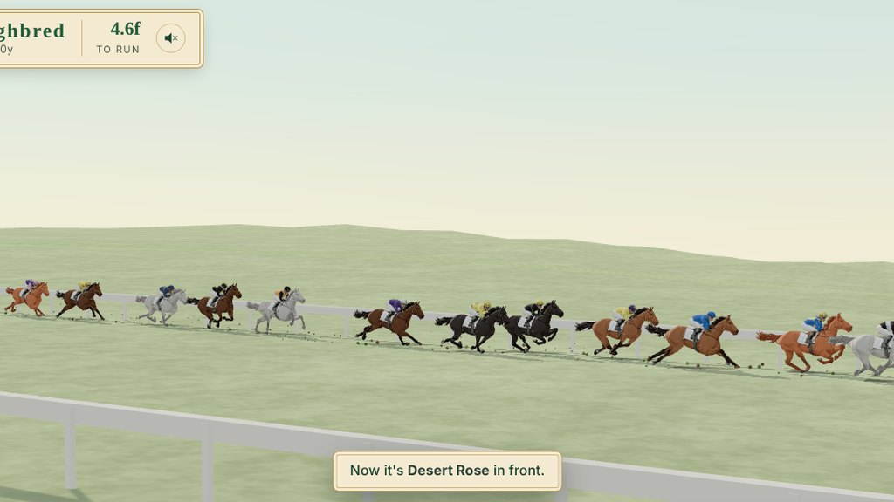

Epsom's track in 3D: left-handed, up the hill from the Derby start, round and down Tattenham Corner and up the cambered straight to the post, with the slopes in the race itself. A draft: the real outline (OpenStreetMap) and the real ground (AWS Terrain Tiles), with the grandstand (from the owner's clay model) by the post, the Hill packed with the festival, a Ferris wheel and a helter skelter, Tattenham Corner, and boards and woods round the far side.

Three half-miles. The Derby course climbs about 45 m in its first half mile, levels over the top, falls round Tattenham Corner, and the straight runs downhill to a dip a furlong out before rising to the post. The horses feel the slopes.
The camber. The straight leans down towards the far (inside) rail, about a metre across the track.
A draft for mark-up. The scenery is placed from the race video and the map; the grandstand follows the owner's model, built from the kit's balcony stand and Rowley Mile pieces.
Running slowly? Choose Medium or Low under Quality in the race view's bar. Auto steps down by itself.